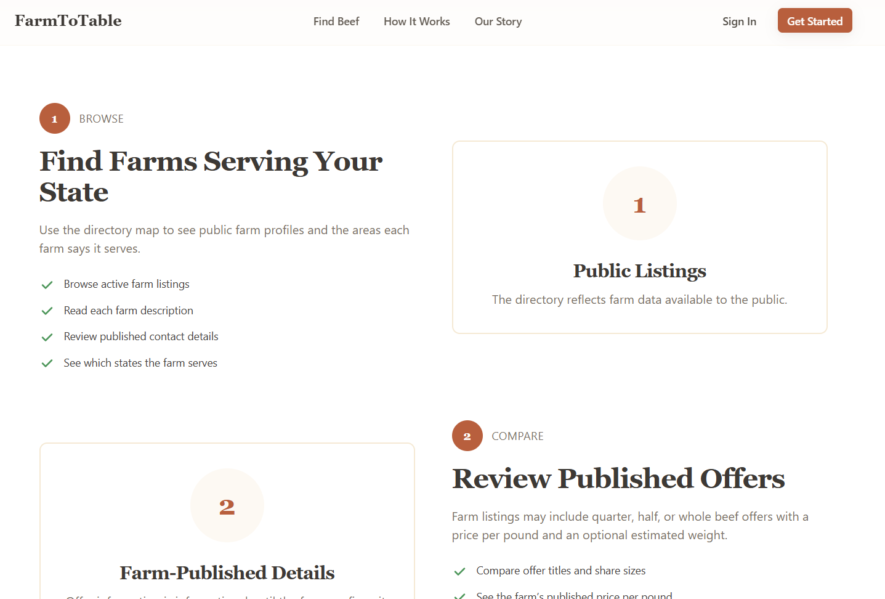

Know your farmer, know your beef. A directory where buyers browse local farm profiles and compare the beef-share offers each farm publishes.
The opportunity
Buying meat directly from a local farm means better quality and a fairer deal for the farmer. But for a first-time buyer it's opaque: beef comes as a quarter, half, or whole share, priced per pound with an estimated weight, and the whole thing usually closes through a phone call or a form — nothing like the one-click checkout people are used to.
As a co-founder, I set out to make that path approachable — help a buyer go from curious to confident, and give farmers a simple way to publish what they're offering and to whom.
The key decision
The most important call we made was what not to build. Farm to Table is intentionally a directory and reservation-inquiry tool — not an online store. Bulk beef is a high-consideration purchase that closes on the farmer's terms, and trust is the whole point ("know your farmer"). So the product's job is discovery, comparison, and connection — not checkout. Farms control their own public listings, and offer details stay informational until the farm confirms them.
That restraint is the backbone of the product. The value isn't in processing a sale — it's in helping a buyer trust a farmer enough to start the conversation, and giving farmers a place to be found without handing the relationship to a marketplace.
What I owned
This started from a problem we believed in, not a brief. I ran the user research that shaped what we built, defined the roadmap and the MVP scope, translated findings into user flows and wireframes, and contributed the frontend that turned the concept into something people could actually browse — working with a small engineering team to align on constraints and iterate.
How it works
A directory map shows where farms operate, color-coded by whether they have open offers, have farms listed, or none yet. Buyers browse active listings, read each farm's description, review published contact details, and see which states a farm says it serves.

Farm listings can include quarter, half, or whole beef shares, each with a price per pound and an optional estimated weight. Buyers compare offer titles and share sizes against what farms publish — all from public data, before ever reaching out.

When a buyer finds the right share, the flow hands off to a reservation inquiry — connecting them to the farm rather than processing a transaction, keeping the relationship (and the trust) where it belongs.
Design